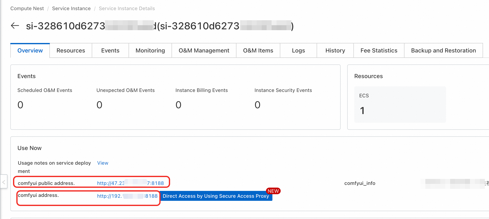
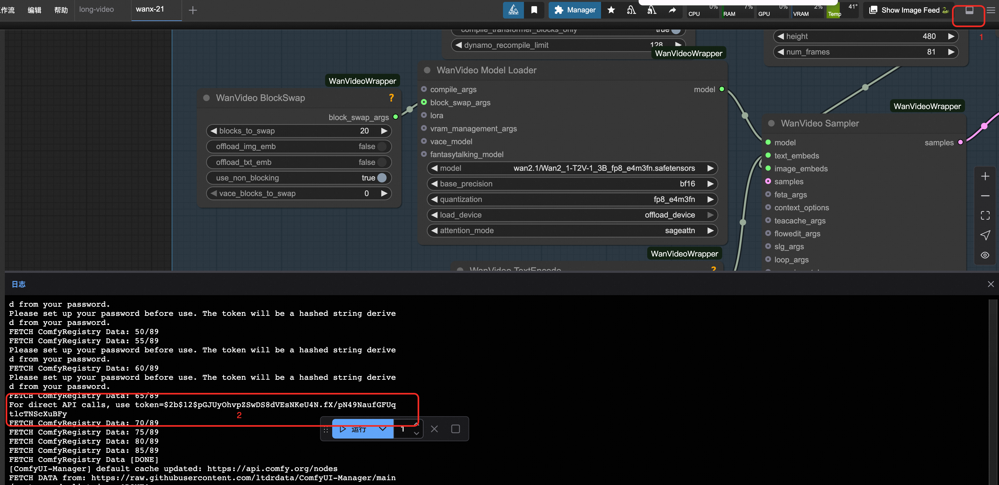

🎬 Wan2.1-T2V-1.3B 文本到视频生成完整指南
轻量级文本到视频生成技术，T2V (Text-to-Video) 专业级视频生成
⚡ 1.3B参数
🎯 轻量高效
🚀 快速生成
🌟 模型简介
**Wan2.1-T2V-1.3B** 是 WanVideo 2.1 系列文本到视频生成模型的轻量级版本，专为资源受限环境设计。该模型在保持良好视频生成质量的同时，显著降低了硬件要求，让更多用户能够在消费级设备上体验文本到视频技术。
✨ 核心特性
⚡ 轻量参数规模
1.3B 参数，轻量高效，适合消费级设备
🎥 文本到视频专用
专门针对文本到视频生成任务优化
⏰ 时序连贯性
保持视频帧间的流畅性和一致性
🛠️ 多样化生成
支持各种风格和主题的视频生成
🚀 快速生成
轻量化架构，生成速度快
🌐 多语言支持
支持中文和英文文本提示
📊 技术规格
🎨 生成能力
🎭 风格多样
支持动漫、写实、艺术等多种风格
支持动漫、写实、艺术等多种风格
🌈 场景丰富
室内外、自然、城市等各种场景
室内外、自然、城市等各种场景
🏞️ 动作流畅
人物动作、物体运动自然流畅
人物动作、物体运动自然流畅
🎯 细节精准
根据文本描述精确生成细节
根据文本描述精确生成细节
✨ 创意无限
支持创意和想象力丰富的内容
支持创意和想象力丰富的内容
📈 质量稳定
保持一致的高质量输出
保持一致的高质量输出
🚀 部署方式
🏗️ 部署架构（推荐）
💡 部署配置
部署架构: ECS单机部署或ACS集群部署
显存需求: 6GB+ 显存，适合消费级设备
扩展性: 支持单机和集群部署
部署架构: ECS单机部署或ACS集群部署
显存需求: 6GB+ 显存，适合消费级设备
扩展性: 支持单机和集群部署
🎯 使用指南
🌐 ComfyUI 使用
### 🔧 操作步骤
**1. 访问界面**
- 单击服务实例处的访问链接
**2. 选择工作流**
- 选择适合的文本到视频生成工作流
- 确认已选择 Wan2.1-T2V-1.3B 模型
**3. 设置参数**
- 输入文本描述（支持中英文）
- 设置视频分辨率和帧数
- 调整生成参数（步数、CFG 等）
**4. 开始生成**
- 点击生成按钮开始处理
- 等待生成完成并下载结果

🔌 API 调用
🔑 获取认证信息
🔐 获取 Token
点击右上方按钮，打开底部面板

🌐 获取服务器地址
COMFYUI_SERVER 的获取参考
💻 Python 代码示例
📋 点击展开 API 调用 Python 代码
import requests, json, uuid, time, random
# 🔧 配置参数
COMFYUI_SERVER, COMFYUI_TOKEN = "输入您的服务器地址", "输入您的token"
T5_MODEL = "wan2.1/umt5-xxl-enc-bf16.safetensors"
VIDEO_MODEL = "wan2.1/Wan2_1-T2V-1_3B_fp8_e4m3fn.safetensors"
VAE_MODEL = "wan2.1/Wan2_1_VAE_bf16.safetensors"
class ComfyUIClient:
def __init__(self, server=COMFYUI_SERVER, token=COMFYUI_TOKEN):
self.base_url, self.token, self.client_id = f"http://{server}", token, str(uuid.uuid4())
self.headers = {"Content-Type": "application/json", **({"Authorization": f"Bearer {token}"} if token else {})}
def generate_t2v(self, prompt, neg_prompt="", steps=15, cfg=6, width=832, height=480, frames=81):
"""🎬 文本到视频生成"""
print(f"🎬 开始文本到视频生成...")
print(f"📝 提示词: {prompt}")
workflow = {
"1": {"inputs": {"model_name": T5_MODEL, "precision": "bf16", "load_device": "offload_device", "quantization": "disabled"}, "class_type": "LoadWanVideoT5TextEncoder"},
"2": {"inputs": {"positive_prompt": prompt, "negative_prompt": neg_prompt, "force_offload": True, "t5": ["1", 0]}, "class_type": "WanVideoTextEncode"},
"3": {"inputs": {"model": VIDEO_MODEL, "base_precision": "bf16", "quantization": "fp8_e4m3fn", "load_device": "offload_device", "attention_mode": "sageattn"}, "class_type": "WanVideoModelLoader"},
"4": {"inputs": {"width": width, "height": height, "num_frames": frames}, "class_type": "WanVideoEmptyEmbeds"},
"5": {"inputs": {"model_name": VAE_MODEL, "precision": "bf16"}, "class_type": "WanVideoVAELoader"},
"6": {"inputs": {"steps": steps, "cfg": cfg, "shift": 5, "seed": random.randint(1, 1000000), "force_offload": True, "scheduler": "dpm++", "riflex_freq_index": 0, "denoise_strength": 1, "batched_cfg": False, "rope_function": "comfy", "model": ["3", 0], "text_embeds": ["2", 0], "image_embeds": ["4", 0]}, "class_type": "WanVideoSampler"},
"7": {"inputs": {"enable_vae_tiling": True, "tile_x": 272, "tile_y": 272, "tile_stride_x": 144, "tile_stride_y": 128, "vae": ["5", 0], "samples": ["6", 0]}, "class_type": "WanVideoDecode"},
"8": {"inputs": {"frame_rate": 16, "loop_count": 0, "filename_prefix": "T2V_generated", "format": "video/h264-mp4", "pix_fmt": "yuv420p", "crf": 19, "save_metadata": True, "trim_to_audio": False, "pingpong": False, "save_output": True, "images": ["7", 0]}, "class_type": "VHS_VideoCombine"}
}
print("📤 提交工作流...")
response = requests.post(f"{self.base_url}/prompt", headers=self.headers, json={"prompt": workflow, "client_id": self.client_id})
print(f"API 响应: {response.text}")
result = response.json()
if "error" in result:
raise Exception(f"工作流错误: {result['error']}")
if "prompt_id" not in result:
raise Exception(f"响应中没有 prompt_id: {result}")
return result["prompt_id"]
def get_status(self, task_id):
"""📊 获取任务状态"""
try:
queue_data = requests.get(f"{self.base_url}/queue", headers=self.headers).json()
if any(item[1] == task_id for item in queue_data.get("queue_running", [])):
return "processing"
if any(item[1] == task_id for item in queue_data.get("queue_pending", [])):
return "pending"
history_response = requests.get(f"{self.base_url}/history/{task_id}", headers=self.headers)
return "completed" if history_response.status_code == 200 and task_id in history_response.json() else "processing"
except:
return "processing"
def download_video(self, task_id, output_path="t2v_generated.mp4"):
"""📥 下载生成的视频"""
try:
response = requests.get(f"{self.base_url}/history/{task_id}", headers=self.headers)
history = response.json()
if task_id in history:
for output in history[task_id]['outputs'].values():
if 'gifs' in output:
filename = output['gifs'][0]['filename']
video_response = requests.get(f"{self.base_url}/view?filename={filename}", headers=self.headers)
with open(output_path, "wb") as f:
f.write(video_response.content)
return output_path
except Exception as e:
print(f"下载错误: {e}")
return None
def main():
"""🚀 主函数 - 执行文本到视频生成任务"""
client = ComfyUIClient()
try:
print("🎬 开始文本到视频生成任务...")
# 示例提示词
prompt = "一个美丽的动漫女孩，长长的黑发，优雅地跳舞，樱花飞舞的背景，柔和的光线，高质量动画"
neg_prompt = "低质量，模糊，扭曲，静态，不自然的动作"
task_id = client.generate_t2v(prompt, neg_prompt, 15, 6, 832, 480, 81)
print(f"🆔 任务ID: {task_id}")
while True:
status = client.get_status(task_id)
print(f"📊 当前状态: {status}")
if status == "completed":
print("✅ 视频准备就绪!");
break
elif status == "failed":
print("❌ 生成失败!");
exit(1)
time.sleep(10)
output_file = client.download_video(task_id, "t2v_generated.mp4")
print("🎉 视频下载成功!" if output_file else "❌ 视频下载失败")
if output_file:
print(f"📁 保存为: {output_file}")
except Exception as e:
print(f"❌ 错误: {e}")
if __name__ == "__main__":
main()
💡 最佳实践
🎯 提示词优化
- 使用清晰具体的描述
- 包含动作和场景关键词
- 指定风格和氛围
- 避免过于复杂的描述
⚙️ 参数调优
- 从默认设置开始（15步，CFG 6）
- 根据内容复杂度调整帧数
- 监控显存使用以获得最佳性能
- 使用推荐分辨率 832x480
🎬 视频质量
- 使用具体的动作描述
- 确保提示词逻辑清晰
- 先用短片段测试效果
- 注意时序连贯性
🔧 常见问题与解决方案
🎨 生成质量问题
解决方案：
- 提示词不够详细：增加更具体的描述
- 参数设置不当：调整步数和CFG值
- 内容过于复杂：简化提示词描述
⚡ 性能问题
优化建议：
- 显存不足：降低分辨率或减少帧数
- 生成缓慢：减少步数或使用更快的采样器
- 模型加载慢：确保网络连接稳定
🔧 技术问题
注意事项：
- ComfyUI版本：确保使用支持T2V的最新版本
- 模型路径：检查模型文件路径是否正确
- 参数范围：注意T2V的推荐参数范围
📚 相关资源
🎬 开始使用 T2V 技术创作精彩视频吧！ | 轻量级文本到视频生成，让创意无限延伸
© 2009-2022 Aliyun.com 版权所有